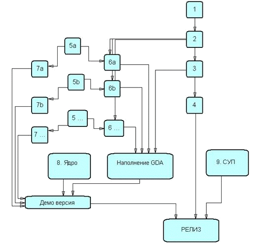

[home]
15 марта 1999 года
Этапы разработки квестовой части
Перечисленные девять пунктов отвечают только за разработку механики квеста. Они не включают в себя доработку
сценария, наполнение GDA, разработку игрового интерфейса.
- Разработка основных форматов данных, используемых в квестовой части.
- Разработка формата архивного файла (GDA — game data archive). Архивный файл имеет иерархическую структуру произвольного уровня вложенности и связывает воедино различные форматы данных, используемые в игре.
- Написание библиотеки чтения/записи GDA.
- Создание оболочки позволяющей манипулировать GDA - визуальная работа с архивом.
- Оптимизация библиотеки чтения/записи GDA под операцию чтения (в релизе запись в GDA не используется). Создание инструментов позволяющих компактизировать GDA и готовить его релизную версию.
- Создание инструментов редактирования основных форматов данных и занесения их в GDA.
- Написание кода отвечающего за обработку объекта для каждого из типов данных.
- Программирование квестового ядра.
- Создание системы управления персонажами.
Пункты 5, 6, 7 повторяются для каждого формата данных, который должен быть включен в игру, например:
a
- Формат данных для хранения топологии мира: граф.
- Инструмент для редактирования топологии и для ее связи с 3D моделью мира, проверка целостности.
- Маршрутизатор.
b
- Формат данных для хранения информации о конкретном персонаже.
- Инструмент для создания, редактирования персонажей.
- Объектно-ориентированный код, обрабатывающий действия персонажа.
c
- Формат данных для связи озвучки с субтитрами.
- Инструмент, позволяющий задавать и редактировать такие связи.
- Программный код, воспроизводящий субтитры по озвучке.
Последовательность этапов

[top] [home]